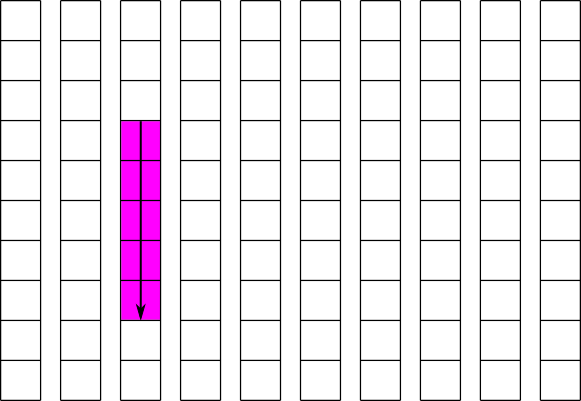

|

|
|
| Figure 1: Contiguous dataset | Figure 2: Chunked dataset |
Return to the "Advanced Topics" page.
An alternative to the contiguous layout is the chunked layout. Whereas contiguous datasets are stored in a single block in the file, chunked datasets are split into multiple chunks which are all stored separately in the file. The chunks can be stored in any order and any position within the HDF5 file. Chunks can then be read and written individually, improving performance when operating on a subset of the dataset.
The API functions used to read and write chunked datasets are exactly the same
functions used to read and write contiguous datasets. The only difference is a
single call to set up the layout on a property list before the dataset is created.
In this way, a program can switch between using chunked and contiguous datasets by
simply altering that call. Example 1, below, creates a dataset with a size of 12x12
and a chunk size of 4x4. The example could be change to create a contiguous dataset
instead by simply commenting out the call to H5Pset_chunk.
#include int main(void) { hid_t file_id, dset_id, space_id, dcpl_id; hsize_t chunk_dims[2] = {4, 4}; hsize_t dset_dims[2] = {12, 12}; int buffer[12][12]; /* Create the file */ file_id = H5Fcreate(file.h5, H5F_ACC_TRUNC, H5P_DEFAULT, H5P_DEFAULT); /* Create a dataset creation property list and set it to use chunking */ dcpl_id = H5Pcreate(H5P_DATASET_CREATE); H5Pset_chunk(dcpl_id, 2, chunk_dims); /* Create the dataspace and the chunked dataset */ space_id = H5Screate_simple(2, dset_dims, NULL); dset_id = H5Dcreate(file, dataset, H5T_NATIVE_INT, space_id, dcpl_id, H5P_DEFAULT); /* Write to the dataset */ buffer = H5Dwrite(dset_id, H5T_NATIVE_INT, H5S_ALL, H5S_ALL, H5P_DEFAULT, buffer); /* Close */ H5Dclose(dset_id); H5Sclose(space_id); H5Pclose(dcpl_id); H5Fclose(file_id); return 0; }
The chunks of a chunked dataset are split along logical boundaries in the dataset's representation as an array, not along boundaries in the serialized form. Suppose a dataset has a chunk size of 2x2. In this case, the first chunk would go from (0,0) to (2,2), the second from (0,2) to (2,4), and so on. By selecting the chunk size carefully, it is possible to fine tune I/O to maximize performance for any access pattern. Chunking is also required to use advanced features such as compression and dataset resizing.
|
|
|
|
| Figure 1: Contiguous dataset | Figure 2: Chunked dataset |
Suppose we have a 10x10 contiguous dataset B. The first element stored on disk is B[0][0], the second B[0][1], the eleventh B[1][0], and so on. If we want to read the elements from B[2][3] to B[2][7], we have to read the elements in the 24th, 25th, 26th, 27th, and 28th positions. Since all of these positions are contiguous, or next to each other, this can be done in a single read operation: read 5 elements starting at the 24th position. This operation is illustrated in figure 3: the pink cells represent elements to be read and the solid line represents a read operation. Now suppose we want to read the elements in the column from B[3][2] to B[7][2]. In this case we must read the elements in the 33rd, 43rd, 53rd, 63rd, and 73rd positions. Since these positions are not contiguous, this must be done in 5 separate read operations. This operation is illustrated in figure 4: the solid lines again represent read operations, and the dotted lines represent seek operations. An alternative would be to perform a single large read operation , in this case 41 elements starting at the 33rd position. This is called a sieve buffer and is supported by HDF5 for contiguous datasets, but not for chunked datasets. By setting the chunk sizes correctly, it is possible to greatly exceed the performance of the sieve buffer scheme.

|
||
| Figure 3: Reading part of a row from a cantiguous dataset | Figure 4: Reading part of a column from a contiguous dataset |
Likewise, in higher dimensions, the last dimension specified is the fastest changing on disk. So if we have a four dimensional dataset A, then the first element on disk would be A[0][0][0][0], the second A[0][0][0][1], the third A[0][0][0][2], and so on.
Chunking allows the user to modify the conditions for maximum performance by changing the regions in the dataset which are contiguous. For example, reading a 20x20 selection in a contiguous dataset with a width greater than 20 would require 20 separate and non-contiguous read operations. If the same operation were performed on a dataset that was created with a chunk size of 20x20, the operation would require only a single read operation. In general, if your selections are always the same size (or multiples of the same size), and start at multiples of that size, then the chunk size should be set to the selection size, or an integer divisor of it. This recommendation is subject to the guidelines in the pitfalls section; specifically, it should not be too small or too large.
Using this strategy, we can greatly improve the performance of the operation shown in figure 4. If we create the dataset with a chunk size of 10x1, each column of the dataset will be stored separately and contiguously. The read of a partial column can then be done is a single operation. This is illustrated in figure 5, and the code to implement a similar operation is shown in example 2. For simplicity, example 2 implements writing to this dataset instead of reading from it.
|  |
| Figure 5: Reading part of a column from a chunked dataset |
#include int main(void) { hid_t file_id, dset_id, fspace_id, mspace_id, dcpl_id; hsize_t chunk_dims[2] = {10, 1}; hsize_t dset_dims[2] = {10, 10}; hsize_t mem_dims[1] = {5}; hsize_t start[2] = {3, 2}; hsize_t count[2] = {5, 1}; int buffer[5]; /* Create the file */ file_id = H5Fcreate(file.h5, H5F_ACC_TRUNC, H5P_DEFAULT, H5P_DEFAULT); /* Create a dataset creation property list and set it to use chunking * with a chunk size of 10x1 */ dcpl_id = H5Pcreate(H5P_DATASET_CREATE); H5Pset_chunk(dcpl_id, 2, chunk_dims); /* Create the dataspace and the chunked dataset */ space_id = H5Screate_simple(2, dset_dims, NULL); dset_id = H5Dcreate(file, dataset, H5T_NATIVE_INT, space_id, dcpl_id, H5P_DEFAULT); /* Select the elements from 3, 2 to 7, 2 */ H5Sselect_hyperslab(fspace_id, H5S_SELECT_SET, start, NULL, count, NULL); /* Create the memory dataspace */ mspace_id = H5Screate_simple(1, mem_dims, NULL); /* Write to the dataset */ buffer = H5Dwrite(dset_id, H5T_NATIVE_INT, mspace_id, fpsace_id, H5P_DEFAULT, buffer); /* Close */ H5Dclose(dset_id); H5Sclose(fspace_id); H5Sclose(mspace_id); H5Pclose(dcpl_id); H5Fclose(file_id); return 0; }
When a selection is read from a chunked dataset, the chunks containing the selection are first read into the cache, and then the selected parts of those chunks are copied into the user's buffer. The cached chunks stay in the cache until they are evicted, which typically occurs because more space is needed in the cache for new chunks, but they can also be evicted if hash values collide (more on this later). Once the chunk is evicted it is written to disk if necessary and freed from memory.
This process is illustrated in figures 6 and 7. In figure 6, the application requests a row of values, and the library responds by bringing the chunks containing that row into cache, and retrieving the values from cache. In figure 7, the application requests a different row that is covered by the same chunks, and the library retrieves the values directly from cache without touching the disk.

|
| Figure 6: Reading a row from a chunked dataset with the chunk cache enabled |
| Figure 7: Reading a row from a chunked dataset with the chunks already cached |
In order to allow the chunks to be looked up quickly in cache, each chunk is
assigned a unique hash value that is used to look up the chunk. The cache contains
a simple array of pointers to chunks, which is called a hash table. A chunk's hash
value is simply the index into the hash table of the pointer to that chunk. While
the pointer at this location might instead point to a different chunk or to nothing
at all, no other locations in the hash table can contain a pointer to the chunk in
question. Therefore, the library only has to check this one location in the hash
table to tell if a chunk is in cache or not. This also means that if two or more
chunks share the same hash value, then only one of those chunks can be in the cache
at the same time. When a chunk is brought into cache and another chunk with the
same hash value is already in cache, the second chunk must be evicted first.
Therefore it is very important to make sure that the size of the hash table, also
called the nslots parameter in H5Pset_cache and H5Pset_chunk_cache, is large enough
to minimize the number of hash value collisions.
To determine the hash value for a chunk, the chunk is first assigned a unique index that is the linear index into a hypothetical array of the chunks. That is, the upper-left chunk has an index of 0, the one to the right of that has an index of 1, and so on. This index is then divided by the size of the hash table, nslots, and the remainder, or modulus, is the hash value. Because this scheme can result in regularly spaced indices being used frequently, it is important that nslots be a prime number to minimize the chance of collisions. In general, nslots should probably be set to a number approximately 100 times the number of chunks that can fit in nbytes bytes, unless memory is extremely limited. There is of course no advantage in setting nslots to a number larger than the total number of chunks in the dataset.
The w0 parameter affects how the library decides which chunk to evict when it needs room in the cache. If w0 is set to 0, then the library will always evict the least recently used chunk in cache. If w0 is set to 1, the library will always evict the least recently used chunk which has been fully read or written, and if none have been fully read or written, it will evict the least recently used chunk. If w0 is between 0 and 1, the behaviour will be a blend of the two. Therefore, if the application will access the same data more than once, w0 should be set closer to 0, and if the application does not, w0 should be set closer to 1.
It is important to remember that chunk caching will only give a benefit when reading or writing the same chunk more than once. If, for example, an application is reading an entire dataset, with only whole chunks selected for each operation, then chunk caching will not help performance, and it may be preferable to completely disable the chunk cache in order to save memory. It may also be advantageous to disable the chunk cache when writing small amounts to many different chunks, if memory is not large enough to hold all those chunks in cache at once.
Because the entire chunk must be filtered every time disk I/O occurs, it is no longer a viable option to disable the chunk cache when writing small amounts of data to many different chunks. To achieve acceptable performance, it is critical to minimize the chance that a chunk will be flushed from cache before it is completely read or written. This can be done by increasing the size of the chunk cache, adjusting the size of the chunks, or adjusting I/O patterns.
There is a certain amount of overhead associated with finding chunks. When chunks are made smaller, there are more of them in the dataset. When performing I/O on a dataset, if there are many chunks in the selection, it will take extra time to look up each chunk. In addition, since the chunks are stored independently, more chunks results in more I/O operations, further compounding the issue. The extra metadata needed to locate the chunks also causes the file size to increase as chunks are made smaller. Making chunks larger results in fewer chunk lookups, smaller file size, and fewer I/O operations in most cases.
It may be tempting to simply set the chunk size to be the same as the dataset size in order to enable compression on a contiguous dataset. However, this can have unintended consequences. Because the entire chunk must be read from disk and decompressed before performing any operations, this will impose a great performance penalty when operating on a small subset of the dataset if the cache is not large enough to hold the one-chunk dataset. In addition, if the dataset is large enough, since the entire chunk must be held in memory while compressing and decompressing, the operation could cause the operating system to page memory to disk, slowing down the entire system.
Similarly, if the chunk cache is not set to a large enough size for the chunk size and access pattern, poor performance will result. In general, the chunk cache should be large enough to fit all of the chunks that contain part of a hyperslab selection used to read or write. When the chunk cache is not large enough, all of the chunks in the selection will be read into cache and then written to disk (if writing) and evicted. If the application then revisits the same chunks, they will have to be read and possibly written again, whereas if the cache were large enough they would only have to be read (and possibly written) once. However, if selections for I/O always coincide with chunk boundaries, this does not matter as much, as there is no wasted I/O and the application is unlikely to revisit the same chunks soon after.
If the total size of the chunks involved in a selection is too big to practically fit into memory, and neither the chunk nor the selection can be resized or reshaped, it may be better to disable the chunk cache. Whether this is better depends on the storage order of the selected elements. It will also make little difference if the dataset is filtered, as entire chunks must be brought into memory anyways in that case. When the chunk cache is disabled and there are no filters, all I/O is done directly to and from the disk. If the selection is mostly along the fastest changing dimension (i.e. rows), then the data will be more contiguous on disk, and direct I/O will be more efficient than reading entire chunks, and hence the cache should be disabled. If however the selection is mostly along the slowest changing dimension (columns), then the data will not be contiguous on disk, and direct I/O will involve a large number of small operations, and it will probably be more efficient to just operate on the entire chunk, therefore the cache should be set large enough to hold at least 1 chunk. To disable the chunk cache, either nbytes or nslots should be set to 0.
Because only one chunk can be present in each slot of the hash table, it is possible for an improperly set hash table size (nslots) to severely impact performance. For example, if there are 100 columns of chunks in a dataset, and the hash table size is set to 100, then all the chunks in each row will have the same hash value. Attempting to access a row of elements will result in each chunk being brought into cache and then evicted to allow the next one to occupy its slot in the hash table, even if the chunk cache is large enough, in terms of nbytes, to hold all of them. Similar situations can arise when nslots is a factor or multiple of the number of rows of chunks, or equivalent situations in higher dimensions.
Luckily, because each slot in the hash table only occupies the size of the pointer for the system, usually 4 or 8 bytes, there is little reason to keep nslots small. Again, a general rule is that nslots should be set to a prime number at least 100 times the number of chunks that can fit in nbytes, or simply set to the number of chunks in the dataset.
The page “HDF5 Examples by API” lists many code examples that are regularly tested with the HDF5 Library. Several illustrate the use of chunking in HDF5, particularly “Read/Write Chunked Dataset” and any examples demonstrating filters.
“Dataset Chunking Issues” provides additional information regarding chunking that has not yet been incorporated into this document.
One way to make the chunk cache more user-friendly is to automatically resize the chunk cache as needed for each operation. The cache should be able to detect when the cache should be skipped or when it needs to be enlarged based on the pattern of I/O operations. At a minimum, it should be able to detect when the cache would severely hurt performance for a single operation and disable the cache for that operation. This would of course be optional.
Another way is to allow chaining of entries in the hash table. This would make the hash table size much less of an issue, as chunks could shared the same hash value by making a linked list.
Finally, it may even be desirable to set some reasonable default chunk size based on the dataset size and possibly some other information on the intended access pattern. This would probably be a high-level routine.
Other features planned for chunking include new index methods (besides b-trees), disabling filters for chunks that are partially over the edge of a dataset, only storing the used portions of these edge chunks, and allowing multiple reader processes to read the same dataset as a single writer process writes to it.
Return to the "Advanced Topics" page.
|
The HDF Group Help Desk: Describes HDF5 Development Trunk, Release 1.9.x. Highest current public release is HDF5 Release 1.8.x. | Copyright by The HDF Group |